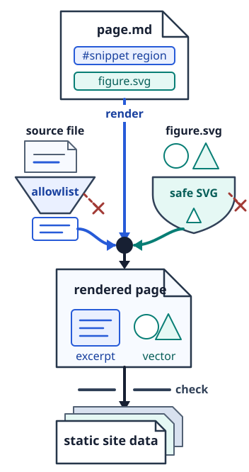

<figure>
  
  <figcaption>Only explicitly allowed source regions and passive SVG enter the rendered page; rejected inputs stop the checked build before its static site data is publishable.</figcaption>
</figure>
